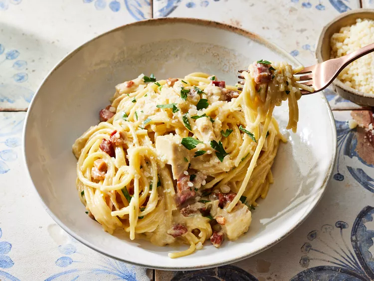

Chicken Carbonara Pasta Bake

Description
This recipe was developed in our test kitchen. Check out some tips and tricks from culinary experts that might make the cooking process easier
Store your leftovers in an airtight container in the refrigerator for up to four days. Reheat in the microwave or on the stove, adding a dash or two of pasta water to wake the dish up.
Ingrediants
- 10 ounces diced pancetta
- 16 ounces spaghetti
- 4 large egg yolks
- 2 cups grated parmesan cheese
- 1 cup heavy cream
- 2 cups cooked chicken breast
- 1 tablespoon italian parsley
Steps
- Gather all ingredients. Preheat oven to 325 degrees F (165 degrees C). Coat a 9x13-inch baking dish with nonstick cooking spray.
- Cook pancetta in a medium skillet over medium-high heat until lightly browned and crisp, about 5 minutes. Set aside.
- Boil spaghetti in lightly salted water for 5 minutes. Drain pasta and reserve 2 cups pasta water.
- Meanwhile, add egg yolks to a large mixing bowl and whisk until smooth.
- Gradually pour 1 1/2 cups hot pasta water over egg yolks, whisking vigorously, making sure to whisk constantly so eggs do not scramble.
- Whisk in Parmesan cheese, then heavy cream.
- Add cooked pasta, pancetta, and chicken to the sauce, toss to combine. Transfer pasta mixture to prepared dish.
- Bake until hot and sauce has thickened, 20 minutes, stirring halfway through.
- Remove from heat, stir and let stand for 2 to 3 minutes allowing sauce to continue to thicken. Additional pasta water can be added, as desired, for a saucier pasta.
- Garnish with parsley and extra Parmesan cheese.